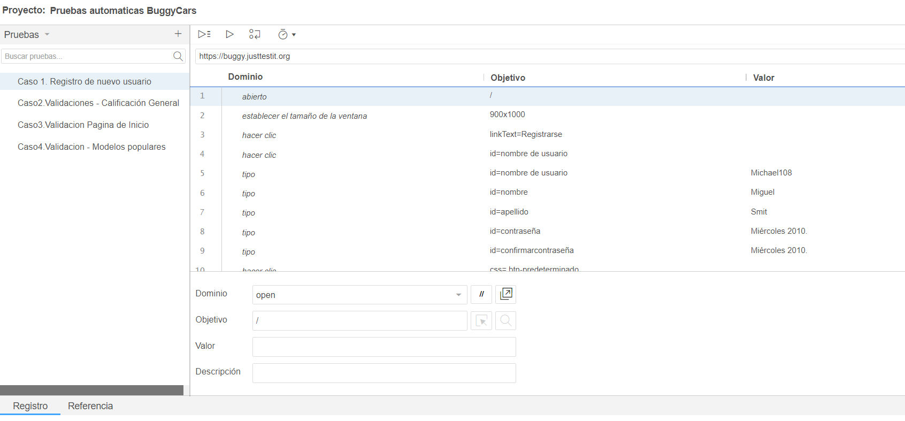

Pruebas Automáticas: BuggyCars
- Abrir la URL: Se navega al sitio web de BuggyCars.
- Establecer el tamaño de la ventana: La ventana del navegador se ajusta a 900x1000 píxeles para visualizar correctamente la página.
- Hacer clic en el formulario: El script hace clic en varios elementos del formulario para el registro del usuario, como campos de entrada y botones de confirmación.
- Ejecutar scripts: Se ejecutan scripts que permiten interactuar con los elementos visuales y simular el envío del formulario.
- Validación final: Se verifica que el registro se haya realizado con éxito mediante la visualización de un mensaje de confirmación.

Esta prueba se centra en las validaciones de calificación general dentro de la aplicación web de BuggyCars. A continuación se explican los pasos observados:
- abrir: El navegador accede a la URL de la aplicación.
- establecer el tamaño de la ventana: Configura la ventana del navegador a 900x1000 píxeles.
- hacer clic: Se hacen múltiples clics en elementos de la página, como imágenes y enlaces, para navegar por la interfaz de usuario.
- ejecutar script: Ejecuta un script JavaScript para realizar acciones dentro de la página, como desplazarse o interactuar con elementos gráficos.
En este caso, se valida la visualización y las interacciones con los modelos populares en la aplicación BuggyCars. A continuación se detallan las acciones realizadas:
- abrir: Navega a la URL de la aplicación.
- establecer el tamaño de la ventana: Ajusta la ventana del navegador a 900x1000 píxeles.
- hacer clic: Se realizan varios clics en imágenes y encabezados de tarjetas para acceder a información sobre los modelos populares de autos.
- ejecutar script: Ejecuta un script para desplazarse automáticamente a una sección específica de la página y continuar las interacciones.